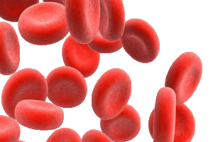

Найчастіше причини виникнення анемії зводиться не до нестачі залізовмісних продуктів у раціоні людини, а в ослабленні здатності засвоювати цей мікроелемент з споживаної їжі. Це може відбуватися, наприклад, внаслідок хірургічних операцій з видалення частини шлунка. Проте найчастіше залізодефіцитна анемія зустрічається у пацієнтів, які перенесли відчутну втрату крові внаслідок отримання серйозних травм, проведення хірургічних операцій або самих звичайних пологів. Трапляється навіть, що анемія супроводжує рясні менструальні виділення, виразки шлунка і дванадцятипалої кишки або ракові захворювання шлунково-кишкового тракту. Непоодинокі й анемії, обумовлені спадковими факторами або присутністю надмірних фізичних навантажень.
Зустрічаються також випадки, коли анемія в організмі викликана надмірно швидким руйнуванням червоних кров'яних тілець (таку анемію ще називають гемолітичної), або коли кістковий мозок виробляє гемоглобін з порушеним будовою білка. У цьому випадку анемію визнають серповидноклітинній. У дітей анемія періодично є свідченням того, що організм заражений паразитами або глистами. Але ж це зовсім не рідкість, враховуючи, скільки часу нормальна дитина проводить на вулиці, копаючись в пісочниці і граючи з сусідськими тваринами, частенько забуваючи про елементарні правила гігієни і стаючи надмірно підданими ризику анемії.
Посилання:wikipedia.org
